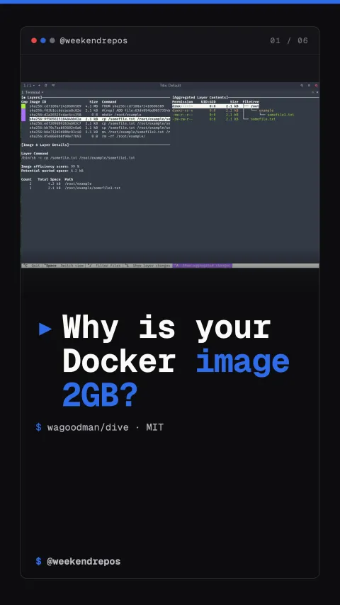

wagoodman/dive
How to inspect Docker layers and discover wasted gigabytes

Why is your Docker image 2GB?
Explore every Docker layer side-by-side to pinpoint duplicated files.
It analyzes each container layer side-by-side, highlighting exactly which apt-get cache or node_modules directory was copied twice.
Layer-by-layer terminal UI · file tree diffing
Measure container efficiency and catch bloated builds inside CI pipelines.
Dive scores your image efficiency and fails automated CI builds if wasted space crosses your custom threshold.
Automated CI gate · CI=true dive <image>
Shrink multi-gigabyte production images into lightweight lean containers.
Once you discover which intermediate build artifacts leaked into your production layer, slashing image sizes takes minutes.
wagoodman/dive on GitHub
Speed up CI and slash cloud registry storage costs with Dive.
Stop waiting 5 minutes for slow container pulls. Audit your images before pushing them.
Open-source developer tooling
43,000 stars. Written in Go. MIT licensed.
Dive has over 43,000 stars on GitHub, written in Go, and MIT licensed. One tool to cut your Docker bloat.
wagoodman/dive · MIT License · 43k stars